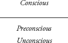
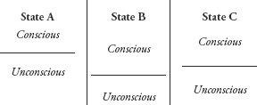

3
Falling Apart
Dissociation and the Dissociative Disorders
It is important to understand the experience of dissociation—the disruption of the normal integration of experience—as a response to trauma or stressful experiences. This feeling of internal fragmentation under stress has become a part of our common lexicon: “I felt as though I was falling apart,” “I was shattered,” “I was beside myself.” This dissociative sense of fracturing results in psychic distress and a paralysis of functioning in which associative capacity—access to thoughts, feelings, normal abilities, and judgment—is lost or becomes limited. I can recall a vivid personal example. Many years ago, when I was the director of an inpatient unit, there was a tragic series of suicides of patients in the program—three patients over eight months.1 On the evening of the third suicide, I was called at home by the charge nurse on duty. After being informed of the circumstances of the suicide, I hung up the phone and was frozen in shock (as suicide is probably the most dreaded event that can occur on an inpatient unit). I had no idea of what I should do, despite having responded to a similar event on two previous occasions. I had lost the capacity to access my feelings or even the basic knowledge of how to respond. It was only after I called the hospital director that I remembered the procedures I should follow: go to the hospital, get help from other program psychiatrists and the on-call psychiatrist, assess all of the other patients concerning their safety, investigate what happened to the patient who suicided, designate someone to contact the family, and provide support for the staff.
The DSM-IV defines dissociation as the “disruption of the usually integrated functions of consciousness, memory, identity, or perception of the environment” (APA, 1994, p. 477). Dell and O’Neil’s (2009) definition elaborated on the DSM-IV central concept of the disruption of experience:
The essential manifestation of pathological dissociation is a partial or complete disruption of the normal integration of a person’s psychological functioning.… Specifically, dissociation can unexpectedly disrupt, alter, or intrude upon a person’s consciousness and experience of body, world, self, mind, agency, intentionality, thinking, believing, knowing, recognizing, remembering, feeling, wanting, speaking, acting, seeing, hearing, smelling, tasting, touching, and so on.… [T]hese disruptions … are typically experienced by the person as startling, autonomous intrusions into his or her usual ways of responding or functioning. The most common dissociative intrusions include hearing voices, depersonalization, derealization, ‘made’ thoughts, ‘made’ urges, ‘made’ desires, ‘made’ emotions, and ‘made’ actions. (p. xxi)
Under conditions of moderate stress, dissociative responses are usually transient and reversible, as the stressful events are progressively integrated into the rest of normal experience. Truly extreme, overwhelming, and prolonged stress, however, can have long-lasting pathological effects in two different ways. If children are exposed to severe chronic stress during critical developmental periods, they may fail to achieve the normal integration of cognition, memory, emotions, perceptions, abilities, and sense of self that supports optimal functioning. This kind of dissociation in response to childhood trauma is a failure of integration, rather than a process of fragmentation. However, older individuals who are subjected to this kind of traumatization may become shattered in a fundamental way. If the stress is long-standing enough, these changes can be difficult to reverse (e.g., the alterations in mental functioning for some combat veterans that can lead to long-term disability).
MODELS OF THE MIND
The concept of dissociation in response to trauma was well described by the French physician and theorist, Pierre Janet (1907), in the early part of the 20th century (van der Kolk & Van der Hart, 1989). Janet was the most articulate theorist to explain the maladies of his era (e.g., hysteria) as characterized by “a tendency to the dissociation … of the systems of ideas and functions that constitute personality” (1907, p. 32). Janet’s work described the effects of trauma on functional losses such as amnesia (that he called mental stigmata), intrusions of traumatic flashbacks and thoughts (that he called mental accidents), and changes in somatic function (e.g., conversion disorders) or intrusive bodily experiences that we now call somatoform dissociation (Nijenhuis, 2000).
Although much of Janet’s work was assimilated into Freudian psychoanalytic theory, the dissociative model of the self was largely supplanted by Freud’s (1893–1895/1955) psychoanalytic concepts of repression and the unconscious. Both traditional psychoanalytic and dissociative concepts involve the psychological splitting of experience, but in different ways. The classic psychoanalytic concept, based on Freud’s (1900/1935) “topographic theory,” assumes that persons have a single or unitary psychological state that is experienced as conscious, preconscious (not conscious, but almost conscious), and unconscious in the familiar model of so-called horizontal splitting:

In contrast to the theory of repression, the model of dissociation suggests that experience can be split in more complex ways. For example, rather than seeing persons as always having a unitary experience, the dissociative model suggests that over time, one’s experience can vary over several different experiential states (so-called vertical splitting). Each state may differ in terms of what is conscious and unconscious (i.e., what is conscious in one state may be unconscious in another).

The Freudian notion of the unitary structure of the self remained the predominant theoretical understanding of mental functioning until nearly the end of the previous century, although it was challenged at times. For example, Freud’s disciple, Sàndor Ferenczi, diverged from the psychoanalytic community by resurrecting the idea that trauma—particularly childhood sexual abuse—resulted in the splitting of personality states (Ferenczi, 1949). His deviation from the orthodoxy of the day resulted in his being repudiated by Freud and vilified by the psychoanalytic community (Brenner, 2001; Davies & Frawley, 1994; Howell, 2005).
The modern recognition of the importance of dissociation emerged in the mid-1980s through the study of dissociative identity disorder (DID), which was then called multiple personality disorder. In response to newly emerging cases of DID, pioneering efforts were made by many individuals to understand and treat this disorder. Among others, psychiatrists Richard Kluft, MD, PhD; Bennett Braun, MD; and Philip Coons, MD, shared their wealth of clinical experience in treating DID with many clinicians who were just encountering their first cases of DID and struggling in isolation to know how to work with them (Braun, 1986; Braun & Sachs, 1985; Coons, 1984; Kluft, 1984, 1985a, 1985b, 1986). Psychiatrist Frank Putnam, MD, wrote broadly about dissociation in response to traumatic events and the importance of age, gender, and type of trauma in the development of multiple types of dissociative reactions (Putnam, 1985). As the field of trauma and dissociation matured, attention turned to the various manifestations of childhood trauma in adults, broadening the understanding of the complexity of posttraumatic responses. For example, in a 1990 book, Incest-Related Syndromes of Adult Psychopathology (Kluft, 1990b), there were discussions of disturbances in the sense of self (Putnam, 1990), somatoform disorders (Loewenstein, 1990), cognitive sequelae (Fine, 1990), posttraumatic stress (Coons et al., 1990), hypnoidal states (Spiegel, 1990), and revictimization (Kluft, 1990a). Thus began the emergence of a new field of study and clinical expertise in psychiatry and psychology, recovering many of the findings of Janet and others that had been buried and lost many decades previously.
Given the rejection of dissociation as a response to trauma by Freud and the early psychoanalytic community, it is particularly interesting that modern psychoanalytic thinking has adopted many of the constructs of dissociation theory to create a more useful model of both normal and pathological mental functioning. Psychologist and psychoanalyst Philip Bromberg, PhD, is one of several in the relational and interpersonal analytic community who have argued that Freud’s conceptualizations do not fully explain the adaptations of the mind that patients experience and are reproduced in therapy:
If one wished to read the contemporary psychoanalytic literature as a serialized Gothic romance, it is not hard to envision the restless ghost of Pierre Janet, banished from the castle by Sigmund Freud a century ago, returning for an overdue haunting of Freud’s current descendants.… Freudian theory represented a crucial advance in a certain way over what Janet had to offer.… But Freud’s vision was too simple. Though he lent a new coherence to our understand of disparate mental states, he did so at the cost of bequeathing us the therapeutic fiction that for practical purposes, or at least where psychic conflict was involved, the structure of the self could be assumed to be unitary. (Bromberg, 1998, pp. 189, 203)
Bromberg (1998) described pathological dissociated states as arising from interpersonal psychological trauma that results in chaotic affective flooding. He theorized that in order to avoid the sense of annihilation, there must be delinking of self-states so the threatening experiences become “not-me.” In many ways, this dissociative model challenges some core beliefs associated with psychoanalysis. For example, the psychoanalytic model of the mind has traditionally focused on intrapsychic conflict producing neurosis and psychiatric disease. Bromberg pointed out that dissociation actually allows conflictual material to coexist in the mind, sometimes in a variety of self-states. He has written that the analyst is able to perceive the patient’s shifting self-states by reflections in the analyst’s own experience. It is only through this kind of attunement that the analyst is able to understand the interpersonal process of the treatment and how to potentially bring together dissociated experiences. The level of personal involvement implied in this psychotherapeutic stance is in notable contrast to the interpersonal detachment that is stereotypically associated with psychoanalysis.
The theories of interpersonal and relational analyst Donnel Stern, PhD (1997), also involve dissociation as a central mechanism. Unlike Janet, and in the tradition of classic psychoanalytic thinking, Stern has viewed dissociation as an active defense, itself unconscious, that makes an individual unable to reflect on experiences that induce conflict; he describes these unprocessed experiences as being unformulated. In contrast to the theory of repression, in which there is pressure for buried conflictual material to emerge into consciousness, Stern has viewed the dissociation of unformulated experiences as being static, with psychic effort required to bring these experiences into awareness. Consistent with traditional psychoanalytic views, Stern has put forth his model as applicable to trauma in the sense of psychological conflict, not necessarily actual terrifying psychological experiences or physical and sexual abuse.
Psychologists Jody Messler Davies, PhD, and Mary Gail Frawley, PhD (1994), were among the first in the psychoanalytic community to explicitly apply dissociation theory to the treatment of adult survivors of childhood sexual abuse. In their model, the sexually abused child consciousness splits vertically as a way of shielding the self from “overwhelming fear of annihilation and, further, to shield oneself from cognitively knowing about the event(s)” (p. 62). They described the emergence of specific types of identities in the analytic therapy of these patients: a depleted adult that has “the semblance of a functioning, adaptive, interpersonally related self … who struggles to succeed, relate, gain acceptance, and ultimately to forget, and a child who, as treatment progresses, strives to remember and to find a voice with which to scream out her outrage at the world” (p. 67). In this model, the split-off selves are not necessarily the personalities of DID; there may be no amnesia, and the adult and child selves may be mutually aware. However, the identities interact in a way that is very similar to the clinical circumstances found in DID:
They have entirely different emotional agendas and live in a constant state of warfare over whose needs will take priority at any given time.… The child believes that the adult has “sold out” by progressing with life as a grown-up. After all, grown-ups are bad and do bad things. To become one of them is the ultimate betrayal. The child takes every opportunity, therefore, to subvert the adult’s attempt to separate from the past and her identity as a victim to become a part of the outside world.… On her end, the adult persona “hates” the sadistic and disruptive child with bitter intensity. On the most conscious level, the adult views the child as a demanding, entitled, rebellious, and petulant pain in the neck. If she remembers being sexually abused in childhood, she blames her child self for it, thereby refortifying her insistence on the child’s thorough and complete badness. (p. 67)
Davies and Frawley noted that the child-self can have several different personas, including the “good-perfect child; the naughty-omnipotent child; and, ultimately, the terrified-abused child” (p. 68). Although these self-states do not reach the dissociative extent of multiple personalities, the therapeutic work resembles that used with DID: promoting mutual acceptance and integration of the parts of the self.
It is ironic that the model of dissociation was once eschewed by the mainstream psychoanalytic community and has now been embraced by this most traditional sector of psychiatry and psychology. Bridging the gap between the clinicians in the trauma field and current analytic thinking, psychologist and psychoanalyst Elizabeth Howell, PhD (2005), has written how the implicit or explicit notion of dissociation has figured in the work of historical and contemporary analysts. To Howell, the complex and sometimes dense abstractions of the analysts have rich applicability to clinical treatment. For example, enactments (referred to by Bromberg and Stern) are understood as unconscious ways that traumatized patients use dissociation to avoid productive attachments in therapy, mirroring early relational patterns. Recognition of these enactments presents clinicians with the opportunity to promote integration and relational patterns that are more functional. In addition to noting the ways in which traumatic experiences promote dissociation of intrapsychic experiences, Howell also examined the ways in which trauma and dissociation contribute to characterologic dysfunction, such as pathological narcissism, psychopathy, and even the rarely discussed phenomenon of evil:
It is not surprising that, collectively, we have become more conscious of evil and dissociation at the same time in current history. In many remarkable ways, the dissociative mind bears witness to a multitude of human contexts and relationships.… [W]hen evil overwhelms us, it may become part of us—until or unless we learn enough about it and our relationships to it. When we face this dilemma, we encounter a completely new realm of moral reality. (p. 10)
From Howell’s discussion of dissociation in response to traumatization, it appears likely that dissociation actually permits the evil to exist and flourish. How else to explain the Nazi architects of the Holocaust, many of whom were said to be warm and engaged family men in their private lives? So, too, have been many perpetrators of genocide, of organized crime, of terrorism, and of intolerance and bigotry. In this way, Howell’s theory of the “dissociative mind” helps us to understand not only classic posttraumatic responses to trauma but also complex issues of personality functioning.
CLINICAL DISSOCIATION
The dissociative concept of multiple self-states is enormously helpful in understanding both normal experience and pathological conditions. As an illustration, during a typical day, one moves through a variety of experiential states that can be very different from each other (e.g., in different roles such as worker, spouse, parent, member of a social group). Optimally, each state is functionally correlated with specific activities or the particular external environment. In each state, one has different access to certain kinds of mental information specific to that state and less access to information associated with other states. Individuals have considerable control over the nature of their experiential states as well as automatically adjusting to changing situations. There is a continuous sense of the same identity over many different states—all perceived as “me,” and there is usually good recall of one’s experience in other states.
For the most part, the changes in experiential states occur seamlessly without a person’s conscious awareness of them. From the perspective of state theory, in pathological dissociation, the individual loses control of state changes and the ability to adapt to the environment, and can have a discontinuous sense of identity. Thus, a rape victim with PTSD is suddenly triggered into a flashback of the rape during a violent scene on television. Or, for people with certain dissociative disorders such as DID, the changes in states can be less automatic and there can be amnestic barriers between states; they can change abruptly or persist in ways that are inappropriate for the current situation. Furthermore, in DID, other states may not be perceived as “me.” The study of so-called state-dependent learning supports this rather rigidly compartmentalized model of the human psyche. Research findings suggest that emotions, learning, memory, and recall are highly state-dependent and that when a person is in certain emotional and physiologic states, it is more difficult to access memories and experience of a different state (see, for example, Eich & Metcalfe, 1989; Tobias, Kihlstrom, & Schacter, 1992; van der Kolk, 1994).
Psychiatrist Bennett Braun, MD (1988), further elaborated the various components of experiential states. In his BASK model of dissociation, he identified four parameters of normal experience: behavior, affect (emotion), somatic sensation, and knowledge. Other parameters might well be added, such as one’s sense of identity and the meaning of experiences. Thus, each experiential state has its own unique set of behaviors, feelings, sensations, cognitive awareness, identity, and meaning attached to it. The quality and intensity of the components of states may vary considerably. For example, the parameters connected with someone sitting and listening to a lecture (listening and taking notes as behaviors, a low level of emotional activity, body at rest, alert mental processes, identity as a student, meaning of pursuing educational activity) are quite different from the parameters of the same person performing athletic activity (running and jumping, emotions and senses attuned, the body in motion, identity as an athlete, meaning of engaging in competition or satisfying a need for physical expression).
In Braun’s BASK model of dissociation, the different parameters of experience can be split off from each other in a variety of ways. For example, in typical adult-onset PTSD, a person who is experiencing avoidant symptoms can have cognitive awareness of the trauma, but the affect and meaning of the experience can be split off (e.g., “I can remember what happened, but I feel numb and I’m confused about how to think about it.”). When the defensive avoidance fails, the person is flooded with full awareness, feelings, body sensations, and meaning in a flashback experience. Conversely, survivors of childhood-onset trauma can often split off the cognitive awareness of the traumatic experience, leaving only the affect. Without the cognitive awareness of the origin of the feelings, both patients and therapists can be confused about their basis, as in this clinical illustration:
For many years I treated a young woman with complex PTSD and a history of severe neglect and emotional abuse, gradually building trust and a solid working relationship. Yet, every time I informed her of an impending vacation, she automatically froze and became more distant (or in the early years upset, angry, and self-destructive). I might have understood this reaction through the conventional explanation that she was exhibiting typical “borderline” behavior—overpersonalized, narcissistic, and overemotional responses. She might even have agreed with this assessment, as she was puzzled about her own reaction (“I don’t know why I react this way; you’ve gone away many times and you always come back”), thus leading to an unspoken understanding between us that she was essentially inherently defective. Instead, I understood the patient’s reaction as an affective reexperiencing of known childhood neglect and abandonment that was triggered by my vacation announcement, but without cognitive awareness of the connection to those experiences. Like other humans, she would try to find a reason for her intense emotions, so in the early years of the therapy she would become upset at me as if I was responsible for her distress.
Dissociative experiences range from normal to pathological. Routine adult dissociative experiences include certain kinds of splitting of awareness—for example, what many of us do while driving a familiar route to work. We remember very little about the drive, having been internally preoccupied with personal concerns. Yet, a split-off part of our awareness must be paying attention to the road, as most people suffer very few accidents as a result. The DSM-IV describes several specific forms of dissociation; they are summarized here:
- Depersonalization is an alteration in the perception of oneself so that the usual sense of one’s own reality is temporarily changed, one’s body or feelings are unreal, or one is detached from and can observe one’s own body. It is a feature in a variety of psychiatric disorders and can also result from drug-induced states, anxiety, stress, or fatigue.
- Derealization is an alteration in the perception of one’s environment, feeling that things in one’s surroundings are temporarily strange or unreal, or that one is detached from the environment. Derealization frequently occurs with depersonalization.
- Dissociative amnesia (previously known as psychogenic amnesia) is characterized by deficits in memory functioning not resulting from organic causes such as traumatic brain injury, intoxication, delirium, or dementia. Dissociative amnesia may be partial or complete. It is usually historical and circumscribed—meaning, loss of memory for discrete periods of time in the past. In rare cases, it is retrograde—meaning, the inability to retrieve stored memories of prior events leading up to the onset of amnesia.
- Dissociative fugue is characterized by a temporary and reversible global amnesia for personal identity and past events and is sometimes accompanied by the emergence of a new identity quite different from the person’s original identity in terms of personality and other identifying characteristics of individuality.
- Alteration of identity is characterized by the manifestation and/or subjective feeling of shifts in identity and a sense of conflicts between internal identities. In some instances, alteration in identity can be characterized as having multiple identities that can emerge in fugue-like states.
Additional dissociative experiences are not fully described in the DSM-IV, most notably various kinds of trance states that involve internal focused attention with loss of awareness of immediate surroundings. Imaginative absorption or imaginative involvement is a normal type of trance-like state involving fantasy (e.g., daydreaming or becoming so involved in a book or movie that one loses track of time and one’s surroundings). Meditation and hypnosis also result from dissociative processes where there is a deliberate focus on internal states with loss of awareness of one’s environment. Certain religious ecstatic states and possession states are forms of dissociative trance phenomena. Many of these types of dissociative phenomena are nonpathological, including those that are consistent with religious or cultural practices.
A modest scientific literature indicates that the vulnerability to dissociation is highest in early childhood and normally decreases with age (Putnam, 1997; Sanders & Giolas, 1991; Van IJzendoorn & Schuengel, 1996), which is consistent with the observation that a relatively high level of dissociative experiences is commonly observed in young children. Consider many a 5-year-old on Saturday morning in front of the television: part of the child’s experience is split off and transported into cartoon-land in a particularly intense way, so that the child is often oblivious to events occurring in the room. The phenomenon of imaginary companionship—a dissociative experience—in young children is also considered normal (Manosevitz, Fling, & Prentice, 1977). The child attempts to disown unwanted impulses and feelings by splitting them off and attributing them to another imagined being (e.g., “I didn’t break daddy’s CDs. The bad girl did it!”). We intuitively understand this kind of disavowal in children and accept it as a normal part of the developmental process. The disowned feelings, impulses, and behaviors are eventually spontaneously integrated into the child’s psyche and sense of self as the child begins to achieve control of them. If seen in adulthood, imaginary companionship would be considered pathological as a kind of dissociative identity disorder.2
Researchers in the study of dissociation distinguish between nonpathological trait dissociation and pathological dissociation. There is evidence that nonpathological dissociation has a strong genetic component (Becker-Blease et al., 2004; Jang, Paris, Zweig-Frank, & Livesley, 1998) and has a normal distribution in the population. That is, the trait of dissociation is inborn, and individuals have either a greater or lesser degree of dissociative experiences along a continuum of such experiences. Thus, there is likely to be a population of children who have a higher inborn dissociative capacity. Under normal circumstances, even children who are “high dissociators” would be expected to have a progressive decrease in their dissociative capacity as they grow older. But, if they are exposed to chronic traumatization with ongoing activation of dissociative processes, high levels of dissociative capacity can persist into adulthood, sometimes manifesting as dissociative disorders (Kluft, 1985d, 1990b; Spiegel & Cardeña, 1991). This kind of pathological dissociation, such as chronic depersonalization, amnesia, and fugue states, does not have a continuous distribution in the normal population (Waller, Putnam, & Carlson, 1996; Waller & Ross, 1997). Instead, the distribution is bipolar, with most adults having few dissociative experiences, but a smaller group having a high level of dissociation that is based on environmental rather than genetic influences (Becker-Blease et al., 2004; Grabe, Spitzer, & Freyberger, 1999; Putnam et al., 1996). This distribution can be observed in the clinical arena; when asked, most patients have very few dissociative symptoms, and a smaller group of other patients have florid symptomatology.
Normal adults with lower levels of dissociative capacity (i.e., who do not have antecedent childhood trauma) do have some capacity to activate dissociative processes, such as in adult-onset PTSD in which knowledge of events is often separated from feelings and meanings associated with the trauma. However, they do not develop florid dissociative symptoms or disorders even in response to very overwhelming experiences. For example, in our study of dissociation in psychiatric patients (Chu & Dill, 1990), we found relatively high levels of amnesia for childhood events in samples of psychiatric patients who were exposed to early trauma. However, little amnesia for traumatic events was seen in those patients who were first traumatized in late adolescence or adulthood. Similarly, the vast majority of persons who develop the most severe dissociative disorders—DID and similar disorders—have histories of severe and chronic childhood trauma, usually beginning in early childhood (Coons, 1994; Kluft, 1985d; Putnam et al., 1986; Spiegel, 1984). Conversely, adults who are exposed to even pervasive and harsh trauma (e.g., torture victims or concentration camp survivors) do not develop this disorder.
From a dynamic perspective, the use of dissociation serves as an important psychological defense function in helping the individual to manage overwhelming, conflicting, and intolerable experiences. When a person is overwhelmed, the experience may remain fragmented and separated into compartmentalized components. Different parts of the experience are dissociated (i.e., separated and disconnected). In the face of severe stress, it is common for persons to feel numb (separating feelings from awareness of current events), with a sense of detachment from one’s surroundings (derealization) or from one’s own body (depersonalization), so-called peritraumatic dissociation. In the face of extreme stress, susceptible individuals actually forget, dissociating cognitive knowledge of events from ordinary awareness (amnesia), or they can feel as though the events are occurring to someone else (depersonalization); these latter responses are far more common in traumatized children than in adults.
Many other kinds of defensive dissociative experiences are less commonly described. For example, the ability to feel removed from external reality and to remain internally preoccupied for minutes to hours (depersonalization, derealization, and imaginative absorption) is extremely common in persons who have been extensively traumatized in childhood. The ability to ignore pain (analgesia) is also frequently observed. In more severe dissociative disorders, one’s own thoughts, feelings, or actions may be perceived as alien or made (as though placed in one’s mind and perceived as thought insertion or auditory hallucinations or acted out through one’s body). Finally, in response to the most severe childhood traumatization, we see the dissociative ability to function as a series of different self-states or personalities as the person attempts to adapt as best possible to intolerable events and irreconcilable feelings.
The term dissociation is ordinarily used to describe the phenomenon of compartmentalization or fragmentation of mental contents. It does not ascribe any particular mechanism by which the dissociative process occurs. Does dissociation occur as a result of automatic, nonconscious processes, or are there other specific mechanisms by which it occurs? Especially in the context of describing amnesia, the term repression is widely used in connection with several different mechanisms. As it is commonly used, it often implies how individuals may block out memories of uncomfortable or conflictual experiences. If done consciously, the mechanism is more accurately called suppression, which results from actively trying not to think about negative experiences. This mechanism seems to have played a role in some of the recent cases involving victims of clergy sexual abuse, as in this example:
In 2005, the defrocked Catholic priest Paul Shanley was found guilty of indecent assault and the rape of a former altar boy and was sentenced to 12 to 15 years in prison. During the 1980s, Shanley served in the parish of St. John the Evangelist in Newton, Massachusetts, where he was a popular hip young priest, known for his progressive and unorthodox views. Unbeknownst to members of the parish (and not presented as evidence at the trial), Shanley had been the subject of many complaints of sexual abuse involving children since the 1960s and had taken public positions defending the practice of pedophilia, including a speech at the founding meeting of the North American Man-Boy Love Association (NAMBLA) in 1969. The key witness at the 2005 trial was man in his 20s, whose family had been part of the Newton parish in the 1980s. He testified that Shanley had taken him out of CCD classes (religious education concerning Catholic Christian doctrine) beginning at age 6 or 7 and had sexually abused him in the church bathrooms, the rectory (priest’s residence), and even in the confessional. The man had long blocked out the memories of the events and only recalled them many years later when he was serving in the Air Force. His girlfriend had called to tell him that articles about sexual abuse accusations against Shanley were appearing in the Boston newspapers.
At first, he denied any recall of being abused, but within days, he had the breakthrough of vivid memories, including numerous instances of fondling and oral sex, and detailed mental images of the church bathrooms and the rectory, including the layout of the rooms and shape and placement of doors and windows. In my role as the Commonwealth of Massachusetts’ expert witness concerning the nature of recovered memories, I reviewed numerous documents about the case and was able to interview the witness several months after the trial. He recalled that the sexual abuse had gone on for several years; after it stopped, he consciously tried very hard to not think about what had happened. This strategy worked so well that when he was a young teenager, he attended a farewell party for Shanley’s departure from the parish, but he couldn’t remember why he felt so uncomfortable around him.
This example concerns conscious efforts to not think about the abuse. If the blocking out of trauma occurs without conscious intent, it might be more accurately called selective inattention, a term from cognitive psychology. Or, there is also the classic psychoanalytic concept of repression, which invokes an active process—itself unconscious—that makes memories of overwhelming and conflictual experiences unavailable to ordinary recall. From a dynamic perspective, this mechanism makes a great deal of sense. It is only through forgetting or compartmentalization that a child might be able to deal with the dilemma posed by abuse perpetrated by an authority figure (such as a parent) on whom the child is dependent (consistent with Freyd’s betrayal trauma theory). Which of these mechanisms underlie the phenomenon of dissociation? Or, is it even necessary to invoke a psychological mechanism? Does the psyche simply fail to integrate traumatic experiences, making them difficult to access when an individual is overwhelmed? While there is no clear consensus, the answer is that depending on the circumstances and the characteristics of the individual involved, probably all of these explanations have an important role.
DISSOCIATION AND THE DSM-IV
Dissociative symptoms are the central elements of the dissociative disorders and also the essential part of certain other psychiatric disorders. As defined by the DSM-IV, the dissociative disorders include dissociative amnesia, dissociative fugue, dissociative identity disorder, dissociative disorder, not otherwise specified, and depersonalization disorder. Dissociative amnesia—the disorder as opposed to the symptom—is defined as “one or more episodes of inability to recall important personal information, usually of a traumatic or stressful nature, that is too extensive to be explained by ordinary forgetfulness” (APA, 1994, p. 481) not attributable to organic etiologies such as intoxication or neurologic dysfunction. If it is seen in adult-onset traumatic events, it is usually confined to the trauma itself. Pervasive dissociative amnesia, including major gaps in memory and ongoing periods of lost time, is much more consistent with adults who have histories of severe childhood trauma and is sometimes seen together with other dissociative symptoms as part of a more severe dissociative disorder. Dissociative fugue—again, the disorder versus the symptom—is characterized by global amnesia and identity confusion, sometimes with the assumption of new identity and unexpected travel away from home (APA, 1994). Despite its popularity in the entertainment media (e.g., Jason Bourne in Ludlum’s The Bourne Identity; Liman, Crowley, & Gladstein, 2002), dissociative fugue is a rare disorder, with new cases being almost always newsworthy. Although dissociative fugue is seen infrequently as a single-symptom syndrome, it is commonly a part of more severe and complex dissociative disorders.
Dissociative identity disorder (DID) is defined in the DSM-IV as
the presence of two or more distinct identities or personality states (each with its own relatively enduring pattern of perceiving, relating to, and thinking about the environment and self) … [and that] at least two of these identities or personality states recurrently take control of the person’s behavior. (APA, 1994, p. 487)
Although the idea of multiple personalities has captured media attention, the diagnosis of DID sometimes seems dramatic and bizarre to professionals who have not been exposed to actual clinical cases of it. It is perhaps better intuitively understood as a multiple fugue disorder involving the recurrent emergence of different identities with various degrees and types of amnesia between identities. The typical manifestation of DID usually consists of many different identities rather than simple dual identities. It appears that if this type of dissociation is available to a child to defend against intolerable experience and if it is potentiated by chronic trauma, florid dissociation occurs, resulting in complex fragmentation. Extreme versions of DID occasionally develop in response to particularly horrific ongoing trauma (e.g., children exploited through involvement in years of forced prostitution), with so-called poly-fragmentation, encompassing dozens or even hundreds of personality states. In general, the complexity of dissociative symptoms appears to be consistent with the severity of early traumatization. That is, less severe abuse will result in fewer dissociative symptoms, and more severe abuse will result in more complex dissociative disorders.
Dissociative identity disorder, not otherwise specified (DDNOS) is a catch-all category for dissociative disorders that do not fall into other groups. However, included in the DDNOS category is a commonly seen group of patients who do not have the extreme identity separation of DID, but who have a range of dissociative experiences and significant identity confusion and alteration. Patients with this kind of almost DID do not see themselves as having multiple identities, but frequently feel so different at the time that they see themselves as a series of different “me’s” (e.g., “I know it was me, but I felt as though I was observing myself. I couldn’t believe what I was saying and how I was behaving.”). Also included in the DDNOS category are atypical DID cases in which there are classic DID symptoms but no amnesia between identities, because the DSM-IV diagnosis of DID includes the requirement for the presence of amnesia.
All of the DSM-IV dissociative disorders are nearly universally associated with trauma, internal conflict, or stress, with one exception: depersonalization disorder. In this disorder, the predominant symptoms are intense feelings of detachment from oneself or one’s feelings as well as derealization—detachment from one’s environment and/or other people. Although traumatic events may play a role in depersonalization disorder, the clinical manifestations of this diagnosis suggest a different etiology. Depersonalization disorder has been characterized as typically beginning in late adolescence or early adulthood with a chronic course (Simeon et al., 1997; Simeon, Knutelska, Nelson, & Guralnik, 2003). The onset during a particular age range and a somewhat predictable course suggest an inborn vulnerability to the disorder. The leading American expert in depersonalization disorder, Daphne Simeon, MD, has conjectured that certain individuals may have genetic loading for ongoing high dissociative capacity (personal communication). In such individuals, dissociative experiences increase rather than decrease throughout childhood, blossoming in late adolescence. The sense of feeling unreal may be episodic or continuous, and there is significant distress and impairment in functioning. Simeon has also observed that in some cases of depersonalization disorder, there is not only depersonalization and derealization but also more amnesia for past events and a greater level of compartmentalization of experience. Some authors have noted a similarity between depersonalization disorder and the anxiety disorders, involving a cycle of increasing anxiety over the depersonalization/derealization symptoms leading to more such symptoms (Hunter, Phillips, Chalder, Sierra, & David, 2003).
Depersonalization disorder is uncommon though not rare, and because most clinicians are unfamiliar with the way it commonly presents, it is routinely misdiagnosed as an anxiety or mood disorder. Alternatively, clinicians familiar with the trauma model of dissociation may misdiagnose it as a different dissociative disorder. Correct diagnosis is critically important with this disorder, because it does not respond readily to routine treatments for anxiety, mood, or trauma-based disorders. There are no clearly established treatments, although work on the secondary anxiety produced by the depersonalization symptoms, and cognitive behavioral interventions have been used successfully in some patients. In some cases, medications such as serotonin reuptake inhibitors or other agents have been helpful.
Posttraumatic stress disorder (PTSD) also has dissociative symptoms as an essential feature. PTSD has been classically seen as a biphasic disorder, with persons alternately experiencing phases of intrusion and numbing. As described in the previous chapter, the intrusive phase is associated with recurrent and distressing recollections in thoughts or dreams and reliving the events in flashbacks. The avoidant/numbing phase is associated with efforts to avoid thoughts or feelings associated with the trauma, emotional constriction, and social withdrawal. This biphasic pattern is the result of dissociation; traumatic events are distanced and dissociated from usual conscious awareness in the numbing phase, only to return in the intrusive phase. The proposed diagnostic criteria for the DSM-5 acknowledge dissociation as an essential element of PTSD, describing “dissociative reactions (e.g., flashbacks) in which the individual feels or acts as if the traumatic event(s) were recurring” (APA, 2010a). In addition, patients with PTSD have long-standing heightened autonomic activation that results in chronic anxiety, disturbed sleep, hypervigilance, startle responses, and irritability. This last set of symptoms has led PTSD to be classified with the anxiety disorders rather than with the dissociative disorders. Most of the dissociative disorders and PTSD involve some kind of environmental or psychological stress as a primary etiology, because dissociation seems to play a major role in the psyche’s efforts to deal with the stress.
Dissociative symptoms—primarily depersonalization and derealization—are elements in other DSM-IV disorders, including schizophrenia and borderline personality disorder, and in the neurologic syndrome of temporal lobe epilepsy, also called complex partial seizures. In this latter disorder, there are often florid symptoms of depersonalization and realization, but most amnesia symptoms derive from difficulties with focused attention rather than forgetting previously learned information.
THE RETURN OF THE REPRESSED: RELIVING DISSOCIATED EXPERIENCES3
The reexperiencing of previously dissociated traumatic events presents in a variety of complex ways. The central principle is that dissociated experiences often do not remain dormant. Freud’s concept of the “repetition compulsion” is enormously helpful in understanding how dissociated events are later reexperienced. In his paper, “Beyond the Pleasure Principle,” Freud (1920/1955) described how repressed (and dissociated) trauma and instinctual conflicts can become superimposed on current reality. He wrote:
The patient cannot remember the whole of what is repressed in him, and what he cannot remember may be precisely the essential part of it. … He is obliged to repeat the repressed material as a contemporary experience instead of remembering it as something in the past. (p. 18)
If one understands repression as the process in which overwhelming experiences are forgotten, distanced, and dissociated, Freud posited that these experiences are likely to recur in the mind and to be reexperienced. He theorized that this “compulsion to repeat” served a need to rework and achieve mastery over the experience and that it perhaps had an underlying biologic basis as well. The most perceptive tenet of Freud’s theory is that previously dissociated events are actually reexperienced as current reality rather than remembered as occurring in the past. Although Freud was discussing the trauma produced by intense intrapsychic conflict, clinical experience has shown that actual traumatic events that have been dissociated are often repeated and reexperienced. Past events, affects, behaviors, or even somatic experiences are superimposed on current experience in the form of intrusive thoughts, emotions, bodily sensations, dreams, or full flashbacks. Thus, as in Freud’s description of the repetition compulsion, persons are obliged to repeat these experiences rather than simply remembering them. These repetitions range from the need to repetitively talk about relatively minor traumatic experiences (e.g., a minor car accident) to full-blown PTSD symptoms, including recurring dreams and nightmares, intrusive thoughts, and vivid recollections of the event.
As discussed previously, some of the interpersonal and relational analysts (e.g., Stern) believe that the natural state of dissociated experiences is to remain separate, thus contradicting Freud’s theory of the repetition compulsion. From my clinical experience, I have observed both dynamics at work, motivated by the defensive need to keep conflictual experiences dissociated and out of awareness, as well as the pressure for them to emerge into consciousness. Differing by the characteristics of individuals, by environmental circumstances, and by experiences at various points in the life cycle, these opposite forces exist in a delicate balance that can change over time. For example, external factors such as survival needs can make persisting dissociation necessary in order to preserve functioning, even with the downside of emotional numbing. At other times, a triggering event or even just the absence of stress may permit dissociated experiences to emerge.
The most striking examples of the emergence of previously dissociated experiences are the flashbacks seen in patients with PTSD. These patients are thrust back into the traumatic events both in their dreams and while awake. Any therapist who has experienced a patient’s full-blown flashback has felt the powerful pull into the actual experience of the events along with the patient. The reliving of the trauma is indeed experienced as a real and contemporary event. That is, the patients do not talk about feeling as if they remember the experience; rather they feel the experience in the present. For example, a combat veteran with PTSD, walking down the street of his hometown, may be triggered into reliving his combat experiences by the sound of a car backfiring. This sound, which is similar to the sound of gunfire, may thrust the veteran into reliving a firefight with enemy forces. He may actually have vivid sensory experiences, visualizing, hearing, and even smelling the combat scenario. He may feel as young as he was at the time of the battle, and he may experience the intense fear, horror, helplessness, and even the bodily sensations of those past events. The power of such an experience is phenomenal and points to the extraordinary ability of the psyche to distance and dissociate experiences, as well as to bring them back into consciousness with full force.
Full and vivid reexperiences of traumatic events are seen in PTSD as sequelae of both acute and chronic traumatic experiences. The overwhelming feelings associated with the events and the meaning of the experiences are dissociated from day-to-day consciousness. When the awareness, affect, and meaning of the trauma are reexperienced all together, they may be relived in very powerful ways. Therapists who work with PTSD patients are familiar with the pull into the traumatic experiences such that patients can lose awareness of their current reality and surroundings. Therapists are also all too familiar with the difficult task of attempting to help patients keep one foot in current reality at the same time as they are consumed by the past. Even this may have some untoward results, as the patients then superimpose their experience onto the current situation, as in the following example:
Beth, a pleasant but shy woman in her late 20s, entered treatment about three months after being brutally raped by multiple men in a park near her home. I met her during her hospitalization in the early 1980s shortly after finishing my psychiatric residency program. Understanding that Beth’s current panic attacks, nightmares, and depression were probably related to the recent rape, I encouraged her to tell me about it. After some resistance to discussing the circumstances of the rape, Beth began to have a vivid flashback of the actual events right in my office. She began screaming and fell to the floor, fighting off unseen attackers as if she was being currently molested. Though trained to appear calm in my role as a therapist, I lost my usual composure when my patient began screaming, and I was forced to abandon my own chair in an attempt to restrain her from banging into the office furniture and injuring herself. At first, I was unable to make any contact with her, as she continued to scream and struggle with her eyes clenched tightly shut. She seemed to be in dire physical and emotional pain. Eventually, I was able to engage her attention enough to let her know that I was there. With great effort, Beth was able to describe the rapists to me and the events she was experiencing, and I tried to remind her that she was in my office and that there was no one else present. To this she demanded, “Then why are you hurting me?”
Despite the pitfalls of being confused with the perpetrators of abuse, this contact between the PTSD patient and another person begins a process that is therapeutic and potentially reparative. Traumatic events are often experienced with an intense sense of aloneness. With the support and sense of connection to another person, the patient can tolerate, retain, and integrate the events and all attendant feelings into memory as past experience, rather than remaining a dissociated psychological time bomb that is waiting to explode into consciousness. The sense of interpersonal connection is crucial, because reliving trauma without appropriate interpersonal support is simply setting the patient up to be overwhelmed again by the experience and to be retraumatized. Reliving traumatic events in the context of a supportive interpersonal relationship makes true abreaction and catharsis possible and begins the reparative process.
Adult-onset PTSD commonly occurs in the aftermath of such events as combat, assaults, rape, accidents, and natural disasters. However, the prototypical model of adult-onset PTSD can be quite misleading. The person who is disconnected from the emotional experience of the trauma is prone to report the experience in a rather constricted or matter-of-fact manner. Such persons often deny the importance of these traumatic events in an understandable attempt to keep the overwhelmingly dysphoric feelings from their consciousness. Such a presentation can lead mental health professionals to collude with the denial and to ignore the importance of trauma in the production of emotional disturbance and psychiatric illness. Patients may present with a wide variety of distressing symptoms such as depression or anxiety, or with dysfunctional behaviors such as addictions or self-destructive behaviors, but they may deny the importance of known traumatic events. Interestingly, if questioned about whether it feels as though the events happened to them, they often report that they know about the events but feel as though they happened to somebody else. Clinicians ignore this kind of history at their patients’ peril. Too much time and effort is sometimes expended on fruitless treatment efforts to control symptoms, including endless trials of medications, or psychotherapy directed at issues unrelated to the trauma, as in the following example:
Susan, a woman in her early 40s, was admitted for suicidal depression to the hospital unit that I directed. She had been treated for several years for what appeared to be classic major depression. She was tearful and angry as she talked about the hopelessness of her life. She was convinced that there was no hope of ever feeling better, and she looked at death as a source of potential relief. Under the care of her attending psychiatrist, Susan went through a sophisticated work-up and was begun on a series of medication trials that failed to improve the depression. Finally, she was given a course of electroconvulsive treatments that seemed to result in modest improvement. She bought a bouquet of flowers for the staff and was discharged from the hospital, only to make a near-lethal suicide attempt on the afternoon of the day of her discharge. The hospital staff and her attending psychiatrist were frustrated about her lack of improvement and angry that she withheld her suicidal plans from them. One staff member even commented that the bouquet looked “funereal” and was furious about how the patient had “set us up.” However, after regaining some professional composure, the psychiatrist and staff agreed to her readmission for further evaluation and treatment.
Susan’s current difficulties and past history were reexamined. Interestingly, the treatment team had been well aware throughout the course of treatment that the patient had undergone a horribly traumatic incident some years previously. After giving her infant a prescribed antibiotic medication for an ear infection, the child had gone into anaphylactic (allergic) shock and died in her arms. Because Susan was able to report the events, and even denied any persistent feelings about the death, the staff had assumed that it was no longer a major issue. As Susan once again began to talk about the tragic death of her child, it became clear that there were (of course) major unresolved issues of grief, loss, anger, and guilt. As she relived and shared some of the old feelings with her therapist and the staff, she began to appear less depressed. She appeared warmer and more engaged with others and was eventually discharged uneventfully. One year later, Susan again became severely depressed and required hospitalization. At the time she complained of chest pains that her attending psychiatrist thought may have been side effects of her new antidepressant medication. However, after an observant staff member noted that she was admitted on Mother’s Day, we better understood her somatic pain as heartache.
As discussed in the previous chapter, bodily sensations or somatic symptoms that have to do with past traumatic events can also be dissociated from usual awareness. Somatic memory is much more complicated than we currently understand and can have powerful effects on bodily functioning. A medical evaluation of any persisting somatic difficulties is always warranted to rule out true physical etiologies, but posttraumatic causes should also be considered. Medical interventions are generally fruitless for somatic symptoms (including pain) related to trauma and may only further harm the patient. Of course, the presence of other posttraumatic difficulties makes a diagnosis of PTSD-related somatic symptoms more likely. The following example illustrates a case of adult-onset PTSD with prominent physical symptoms:
Harry, a 37-year-old man, was seen by me in psychiatric consultation after a full medical evaluation failed to disclose any cause for his excruciating abdominal pain and intractable nausea and vomiting. He couldn’t keep down any food or fluids and was in danger of becoming dehydrated. After a period of medical and psychiatric hospitalization, he was slightly improved and was discharged on a regimen of powerful painkillers and tranquilizers. Harry’s treatment with me over the next two years was chaotic. He went through bouts of severe depression and was briefly readmitted to the hospital on two occasions when he became suicidal. In therapy, he continued to have terrible abdominal pains, and he would frequently double over when discussing painful feelings. Even narcotic pain medication was ineffective in relieving the severe abdominal cramping. In therapy sessions, Harry was somewhat self-preoccupied but very likable. He enjoyed telling stories about his past romantic encounters and all the scrapes he had gotten himself into. Over time, he also explored a rather painful childhood and more recent losses and disappointments. Harry gradually improved with less depression and was able to reengage with old friends in a better, more mutually supportive manner. However, he was unable to return to work because of his disabling abdominal pain, nausea, and vomiting.
Finally, in the third year of treatment, Harry came to a therapy session looking very somber. He told me that he had something to talk about that he had never discussed with anyone else. Hesitantly, he began to relate an episode that had occurred in his early 20s. As a way of fleeing a difficult home environment, he had joined a paramilitary organization and had been part of a brief, but disastrous mercenary guerrilla operation in Latin America. He described the combat experience in painful detail, while being doubled over with intense abdominal spasms. He had, at one point, shot a comrade in the head after the comrade had been mortally wounded in the abdomen and was in excruciating pain. It was at this point that he experienced the full horror, pain, nausea, and disgust connected with his combat experiences. These revelations were a major turning point. The physical symptoms abated, and after some additional months of treatment, Harry was free of physical symptoms for the first time in years and was able to function without the use of medications. He received a job offer from an old employer, returned to work, and was able to finish up his course of therapy.
In both of these clinical examples, the patients remembered that the traumatic events had occurred, but they did not connect the trauma to their corresponding feelings and bodily symptoms. It is important to understand that the link between knowledge and feelings could not be easily made in either case because of the enormous psychological benefit of not knowing, and therefore not experiencing, the full impact of the traumatic events. This seeming inability to put simple events and feelings together is a defensive function that protects the psyche from being truly overwhelmed by traumatic circumstances and events.
DISSOCIATIVE RESPONSES TO CHILDHOOD-ONSET ABUSE
When children—particularly young children—are faced with terribly abusive experience, they naturally employ a host of dissociative defenses (Dalenberg & Palesh, 2004; Putnam, 1997; Silberg, 1996). Our own research suggests that factors such as early age of onset, severity, chronicity, and intrafamilial involvement are all implicated in the development of severe dissociative symptoms (Chu & Dill, 1990; Chu et al., 1999; Kirby et al., 1993). Unfortunately, these factors are all too common in the histories of many adult patients who report childhood abuse. In fact, among the hundreds of patients who were admitted to the Trauma and Dissociative Disorders program at McLean Hospital over more than 20 years, early, severe, and persistent childhood abuse seem to be more the rule than the exception.
In one of our early studies (Chu & Dill, 1990), nearly one-quarter of our entire participant group (women consecutively admitted to the hospital) showed levels of dissociative symptoms consistent with a diagnosis of PTSD, and 6% showed levels similar to patients with dissociative identity disorder (DID). Similar or higher levels of dissociative symptoms and/or diagnosable dissociative disorders have been documented in other clinical populations of inpatients (Ross, Anderson, Fleisher, & Norton, 1991; Saxe et al., 1993) and outpatients (Foote, Smolin, Kaplan, Legatt, & Lipschitz, 2006; Surrey et al., 1990). In many of these studies, both physical and sexual abuse were independently correlated with a higher level of dissociative symptoms, and multiple kinds of abuse were related to even higher levels of dissociation. Other parameters of traumatic experiences that have been associated with higher levels of dissociation are severity (e.g., penetration versus sexual fondling), chronicity, early age of onset, and intrafamilial abuse. Additional factors such as violence, physical injury, multiple perpetrators, and fear of dying have been associated with amnesia for abuse (Briere & Conte, 1993; Herman & Schatzhow, 1987). Unfortunately, more severe abuse appears to be the norm among hospitalized patients being treated for trauma-based disorders. For example, in one of our studies, more than 90% of patients reporting sexual abuse described childhood experiences of attempted or completed intercourse rather than only fondling or touching (Kirby et al., 1993). This is not to suggest that less severe abuse is benign, but that severe abuse leads to more symptoms and disability and a greater need for intensive forms of psychiatric care.
There are particular differences in dissociative symptomatology between persons who have been first traumatized as adults and those who have been traumatized as children. Chronically abused children develop more dissociative symptoms, including more dissociative amnesia, because some children have a greater innate dissociative capacity as well as less capacity to tolerate stress. In fact, dozens of studies have demonstrated that children who are extensively abused prior to adolescence frequently exhibit either partial or complete amnesia for the abusive events (Brown, Scheflin, et al., 1999). It is common for patients with severe traumatic histories to have extensive loss of memory for childhood events, as discussed in the previous chapter. Typical reports include statements such as, “I don’t remember anything before the age of 12,” or “I remember some fragments about school, but I couldn’t tell you anything much about my childhood.” Of note is the amnesia for virtually all events, not just the abusive events, suggesting that overwhelming trauma may lead children to actually process their experiences in a way so that they are held separate from ordinary conscious awareness. In the absence of organic reasons for such amnesia, these kinds of statements are highly significant and suggest that there may be reasons why a person might not remember substantial portions of their lives. (See Chapter 5 for a more detailed discussion concerning memory and amnesia.)
Even patients who can recall that they were abused will often not acknowledge the impact of the abuse, or they do not connect the abuse with current difficulties. Again, the psychological gain is in not knowing, because the reality of the abuse and the implications of the abuse are too overwhelming to be appreciated as a whole. However, not acknowledging abuse does not free persons from reexperiencing aspects of the abuse. Instead, such persons are frequently tormented by intensely dysphoric feelings such as helplessness, depression, anger, and isolation that are connected to the unacknowledged or forgotten abuse. Moreover, because such patients are unable to report the core reasons for their distress, neither they nor clinicians are able to make sense of their painful lives. Because most survivors of childhood abuse carry an internal sense of defectiveness, they assume (as do some of their treaters) that they are simply inherently “crazy and bad.” It is striking to realize that it is often easier for many persons to accept that they are inherently defective rather than to acknowledge the enormity and the ongoing impact of their childhood abuse.
ISSUES CONCERNING CLINICAL PRACTICE
Mental health professionals are not routinely trained in adequate interviewing and diagnostic skills to detect either trauma histories or dissociation. A great deal of confusion and misinformation exists about how to ask about childhood abuse, partly because of the concerns raised by some critics that direct inquiries about childhood abuse may be inherently suggestive and may produce false reports of abuse. These concerns must be balanced against the clinical reality that childhood abuse is associated with so much shame and denial that patients routinely do not volunteer such information. Furthermore, there is scant evidence suggests that direct questions delivered in a neutral manner will encourage false reports. My practice is to ask, “Have you had any particularly painful experiences in your life, either as an adult or a child?” Not only does this question avoid any possibility of influencing the patient’s response by suggesting abuse, but it also captures traumatic experiences that patients do not acknowledge to themselves as abuse (e.g., because they feel responsible for and deserving of their maltreatment).
Many clinicians are also hesitant to ask about the basic facts concerning abuse experiences for fear of overwhelming and destabilizing patients. In fact, it is often important to know some specifics about any abuse experiences: “What happened?” “How much do you remember?” “How often did it occur?” “How old were you?” “Who hurt you?” and “How did it affect you?” The answers to these questions can yield important information in assessing the nature and impact of any trauma, helping to focus therapeutic interventions. There are differential effects of various types of abuse, and some details about the experiences can help clinicians understand how patients’ symptoms and difficulties in functioning have evolved. In the interview setting, I have found that patients’ ability to dissociate knowledge from feelings can allow them to divulge sensitive information in a way that is less emotionally charged. Taking a cue from the 1950s police television drama Dragnet, where Jack Webb’s Sgt. Joe Friday character asks for “Just the facts, ma’am,” I ask patients to just tell me as much as they can about what happened and not to let themselves get into the feelings about their experiences (i.e., instructing them to dissociate the affective experience of the trauma). I give them explicit permission beforehand to let me know if they are feeling too uncomfortable to answer and that they can stop the line of inquiry at any time.
Despite the increasing awareness of early trauma in the histories of psychiatric patients, specific questions about dissociative symptoms are generally still not taught to mental health trainees as part of a formal mental status examination. Routine examinations may reveal much about mental processes, but clinicians often do not investigate abnormal experiential state changes, gaps in memory, or distortions in perceptions that result from traumatic experiences. The questions needed to elicit evidence of dissociative symptoms are simple. For depersonalization and derealization, one might ask: “Do you ever have the experience of feeling as if your body or emotions are unreal? … feeling detached from your body or that you are outside your body observing yourself? … feeling as though your surroundings are foggy or unreal?” Questions about imaginative involvement include: “Do you ever have the experience of becoming so involved in a book or movie that you actually become a part of the story? … being preoccupied with thoughts or daydreams inside your head for hours at time?” To elicit any evidence about amnesia, one might ask: “Do you have any memory problems? … any gaps in your memory, any lost time? … any problems in remembering events from your childhood? … a sense of general continuity of your memory?” Finally, to ask about evidence of alternate identities or self-states: “Do you have the experience of feeling so different at different times that you almost feel like a different person? … observing yourself do or say things that don’t seem like things you’d usually do or say? … hearing voices inside your head talking with each other or to you? … being told that you did or said something you didn’t recall doing or saying? … finding belongings that you didn’t recall buying/obtaining?”… finding evidence that you must have done something you didn’t remember doing?”
It is often impractical and unnecessary to do a full screening for dissociative symptoms in all patients. The bipolar distribution of pathological dissociation in clinical populations results in patients having either few or numerous dissociative symptoms. I usually ask about a history of trauma and follow up with a few screening questions about depersonalization/ derealization and memory. If responses to these questions are negative, it is quite unlikely that other dissociative symptoms or a dissociative disorder exists. If patients endorse the screening questions, more inquiries should be made to determine if they have other dissociative symptoms or meet DSM criteria for the diagnosis of a specific dissociative disorder.
Many of the questions routinely used to assess dissociative symptoms come from the Dissociative Experiences Scale (DES; Bernstein & Putnam, 1986, 1993; see Appendix 1). The DES is a 28-item self-report instrument that was designed as a research tool to screen for dissociation. It contains questions that are extremely useful for clinicians who are not accustomed to asking about different types of dissociative symptoms. An even shorter version, the DES-Taxon (DES-T), utilizes eight questions from the DES that are most closely identified with a taxon (class) of individuals who demonstrate “pathological dissociation” (Waller et al., 1996).
Although not widely used in clinical practice, several other instruments are used to assess dissociative symptoms and dissociative disorders. The Dissociation Questionnaire (DIS-Q; Vanderlinden, Van Dyck, Vandereycken, Vertommen, & Verkes, 1993) is a 63-item self-report instrument that measures identity confusion and fragmentation, loss of control, amnesia, and absorption. Developed in Belgium and the Netherlands, the DIS-Q is more commonly used by European clinicians and researchers. The Somatoform Dissociation Questionnaire-20 (SDQ-20; Nijenhuis, Spinhoven, Van Dyck, Van der Hart, & Vanderlinden, 1996; see Appendix 2) is a 20-item self-report instrument that measures somatoform dissociation such as tunnel vision, auditory distancing, unintended muscle contractions, psychogenic blindness, difficulty urinating, insensitivity to pain, psychogenic paralysis, nonepileptic seizures, and so on. A shorter version, the SDQ-5, consists of five items from the SDQ-20 (Nijenhuis, 1999).
A more comprehensive self-report instrument was developed by psychologist Paul Dell, PhD. The Multidimensional Inventory of Dissociation (MID; Dell, 2006a) is a multiscale diagnostic instrument with 218 items that measures dissociative symptoms, generating both scores for classes of symptoms (e.g., derealization, depersonalization, dissociative disorientation and confusion, amnesia, experience of alternate identities, intrusions, trance, flashbacks, body symptoms) and diagnoses (i.e., DID, DDNOS, PTSD and severe borderline personality disorder). The MID and its Excel®-based scoring program are freely available to mental health professionals (see Appendix 3).
There are two structured interview diagnostic instruments for dissociative disorders. The Structured Clinical Interview for DSM-IV Dissociative Disorders-Revised (SCID-D-R; Steinberg, 1994a, 1994b, 1995) is a 277-item interview that assesses five dissociative symptoms: amnesia, depersonalization, derealization, identity confusion, and identity alteration. Most items have follow-up questions that ask for a description of the experience, specific examples, and its frequency and impact on social functioning and work performance, which can yield important clinical information. The SCID-D-R diagnoses the five DSM-IV dissociative disorders, yielding a score for each of the five dissociative symptoms and a total score that is based their frequency and intensity. The Dissociative Disorder Interview Schedule (DDIS; Ross, Heber et al., 1989; Ross et al., 1990) is a 132-item structured interview that assesses the symptoms of the five DSM-IV dissociative disorders, as well as somatization disorder, borderline personality disorder, and major depressive disorder. In addition, the DDIS also assesses substance abuse, Schneiderian first-rank symptoms, trance, childhood abuse, secondary features of DID, and supernatural/paranormal experiences.
Pathological dissociation—both in terms of its clinical significance and its relationship to traumatic experience—remains a critically important but poorly understood and underdiagnosed condition in clinical practice. Unrecognized dissociative symptoms and disorders result in poor clinical outcomes, frustrating clinicians and leaving patients with unrelieved suffering. This is particularly unfortunate because there are accepted and effective treatments and a body of evidence that shows good clinical outcomes for treating dissociation. Mental health providers continue to need education to understand and use the theory and clinical practices concerning trauma and dissociation. Clinicians who are astute in their observations and practice and who strive to understand their patients in light of both current symptoms and past histories may be the best hope for helping traumatized patients alleviate their painful symptoms and eventually achieve some sense of coherence about their pasts and fulfillment in their future lives.
1 The dynamics of this kind of suicide cluster are complex. None of the patients knew each other, and to the best of the staff’s knowledge, none knew of the previous suicides. Hence, the dynamics behind the suicides were likely held by the staff. My hypothesis is that the staff became overly vigilant in terms of guarding against the risk of patient suicide and essentially held all of the responsibility for keeping patients safe (an impossible task), rather than insisting that patients share in that responsibility. I later observed similar dynamics at another hospital where I was called to consult after a series of episodes of serious patient self-injuries and suicides.
2 A history of imaginary companions is common in patients with a dissociative disorder, suggesting that at least in some cases the dissociative splitting of identity extends back into childhood (Trujillo, Lewis, Yeager, & Gidlow, 1996).
3 Portions of this section were adapted from the article “The Repetition Compulsion Revisited: Reliving Dissociated Trauma” (Chu, 1991b).